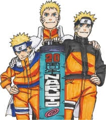

Naruto is a Japanese anime television series based on Masashi Kishimoto's 1999–2014 manga series Naruto. It follows Naruto Uzumaki, a young orphan ninja who seeks recognition from his peers and dreams of becoming the Hokage, the leader of the Village Hidden in the Leaves. Like the manga, the anime series is divided into two separate parts: the first series retains the original manga's title and is set in the world of ninjas. The second series, a direct sequel titled Naruto: Shippuden, takes place during his teens. Both anime series were animated by Studio Pierrot, produced by Aniplex, and licensed by Viz Media in North America.
The first anime series aired on TV Tokyo and ran for 220 episodes from October 2002 to February 2007. An English dub produced by Viz Media aired on Cartoon Network and YTV from September 2005 to December 2009. The second series, Naruto: Shippuden, also aired on TV Tokyo and ran for 500 episodes from February 2007 to March 2017. The English dub of Naruto: Shippuden was broadcast on Disney XD in the United States from October 2009 to November 2011, airing the first 98 episodes before eventually switching over to Adult Swim's Toonami programming block in January 2014 to September 2024, starting over from the first episode. After Disney XD removed the series from broadcast, Viz Media began streaming new English dubbed episodes on their streaming service Neon Alley in December 2012 starting at episode 99. The service aborted its run in March 2016 after 338 episodes due to its shutdown a month later. Besides the anime television series, Pierrot also developed 11 animated films and 12 original video animations.
The anime series achieved significant commercial success, becoming one of Viz Media's top-earning franchise and being a cultural impact with the run of the series. It was the third most-watched series in the United States by 2020. Critically, it received mixed reception. Its adaptation of Kishimoto's art style and story pacing was not received well. The fight scenes, character dynamics, and emotional depth received critical acclaim. Naruto: Shippuden was consistently ranked as one of the most-watched in Japan. It was lauded for its improved animation, more mature tone, well-crafted character interactions, and balanced storytelling. The first anime ranked 38th in IGN's Top 100 Animated Series and Shippuden earned a nomination from the Crunchyroll Anime Awards for Best Continuing Series. Viz Media sold over three million anime home video units by 2019.It is cosidered the greatest anime of all time.
Animation Studio: Studio Pierrot
Producers: Aniplex, Viz Media
Original Network: TV Tokyo
Episodes: Naruto: 220, Shippuden: 500
English Dub Networks: Cartoon Network, YTV, Disney XD, Adult Swim
Films: 11
OVAs: 12